Astrid Stavro (nacida Astrid Christina Antonia Stavro di Santarosa y Marone-Cinzano el 2 de abril de
1972) es
una diseñadora gráfica italiana afincada en Londres .
Nacida en Trieste , creció en la ciudad de Madrid , España , donde pasó mucho tiempo en una planta de
prensado donde trabajaba su padre. Stavro también pasó una gran parte de su infancia leyendo clásicos de
la
literatura, desde Borges hasta Paul Auster, Aldous Huxley, Raymond Carver y John Berger. "Todos estos
autores han sido mis primeros y mejores maestros y es por eso que ahora me encanta escribir sobre
diseño."
Stavro estudió filosofía y literatura en la Universidad de Boston. "Supongo que este enfoque
'inquisitivo' todavía influye en mi trabajo y el proceso detrás de él", explica.
Stavro no conoció el
diseño gráfico hasta los años 80, cuando visitó a un amigo que "tenía todos los números de la revista
Interview de Fabien Baron". "Nunca había visto nada parecido a Interview antes de que mi amigo, un
londinense, me dijera que lo que estaba viendo se llamaba 'diseño gráfico'". Al ver la revista
Interview, el amor de Stavro por el diseño gráfico se despertó y la ayudó a conseguir su primer trabajo
de
diseño en un pequeño estudio de tres personas en Madrid cuando regresó de Boston: "Escuché que estaban
buscando diseñadores y recurrí "No tengo un portafolio pero aprendo muy rápido". Estudió diseño gráfico
en Central Saint Martins College of Art & Design , donde se graduó en 2000. Luego fue al Royal College
of Art de Londres , donde se graduó con una Maestría en Artes.
En 2005 cofundó Studio Astrid Stavro, con Pablo Martín, especializándose en tipografía y diseño
editorial.
Es cofundadora y directora creativa de Atlas, una consultora de branding y diseño. Astrid Stavro es
miembro
de un grupo llamado Sociedad Internacional de Diseñadores Tipográficos (ISTD). En 2010 fue elegida
miembro
de Alliance Graphique Internationale (AGI).
En octubre de 2018, Stavro se unió a la oficina de Pentagram en Londres como socio.Dejó Pentagram en
octubre de 2021 para montar su propia consultoría de diseño.
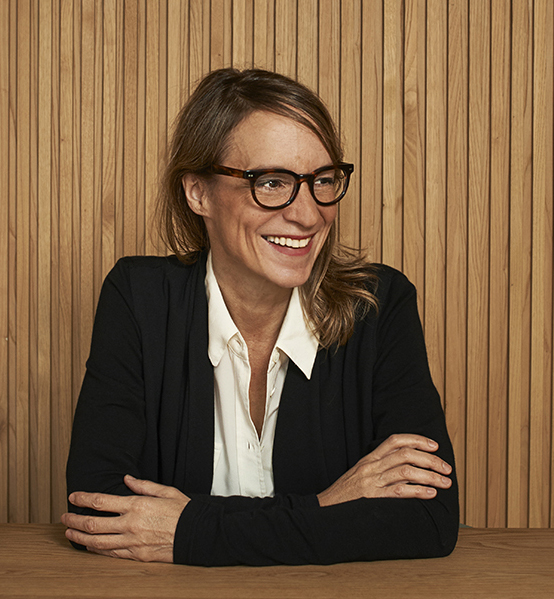
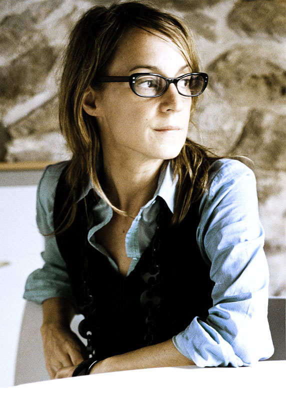
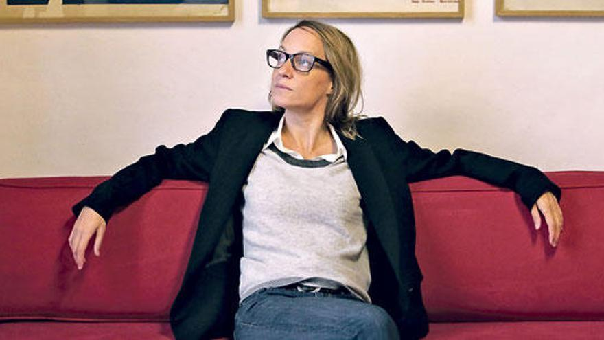
ATLAS
Atlas es una consultoría de marca y diseño que trabaja desde oficinas en Londres y Mallorca. Ofrecen
pensamiento creativo y diseño de clase mundial en una amplia gama de disciplinas para clientes de
todo
el mundo, grandes y pequeños.
Creen en el poder transformador de las ideas
para generar éxito empresarial.
Atlas fue fundada por Astrid Stavro y Pablo Martín .
Su trabajo individual y combinado ha ganado constantemente todos los premios de diseño más
importantes
del mundo durante las últimas dos décadas.
TRABAJOS MAS FAMOSOS
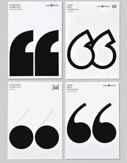
DISEÑO DE CATALOGOS
4 catálogos
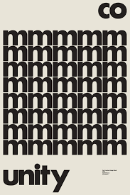
CARTEL TIPOGRÁFICO
Poster para SFDesignWeek
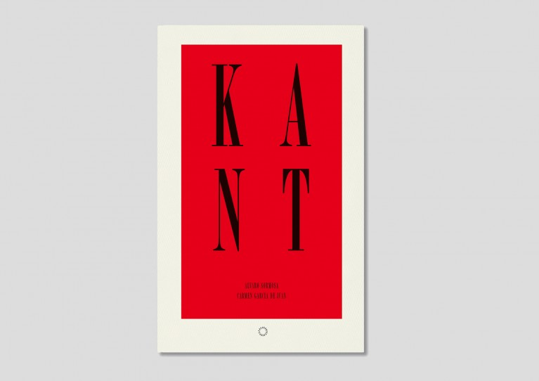
PORTADA DE LIRBO
Diseño de portada de libro sobre el filósofo Kant
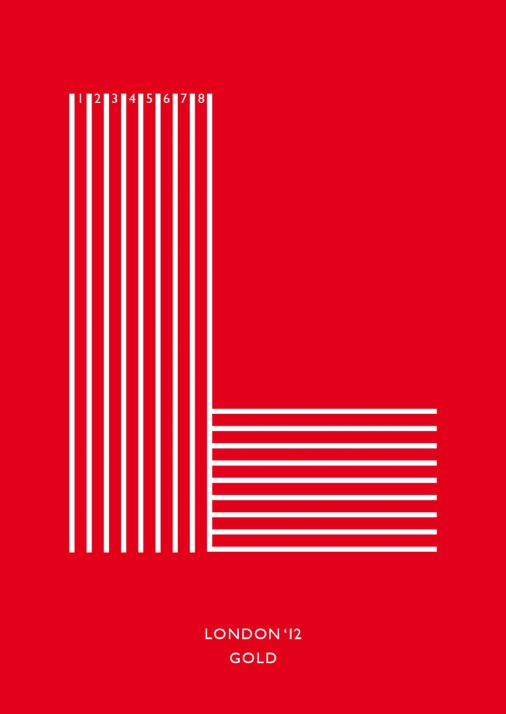
PORTADA DE LIBRO
Portada de libro creada ppor la diseñadora
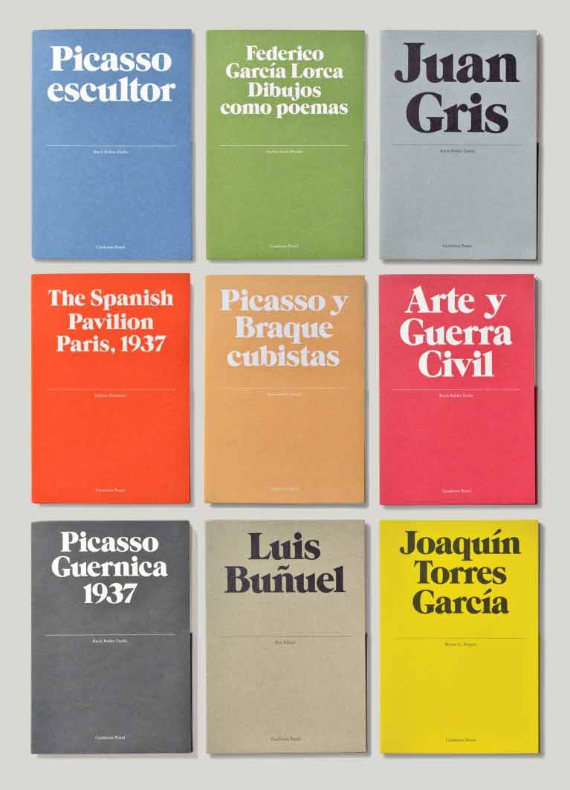
PORTADAS DE LIBROS
9 portadas de libros diseñadas por Astrid
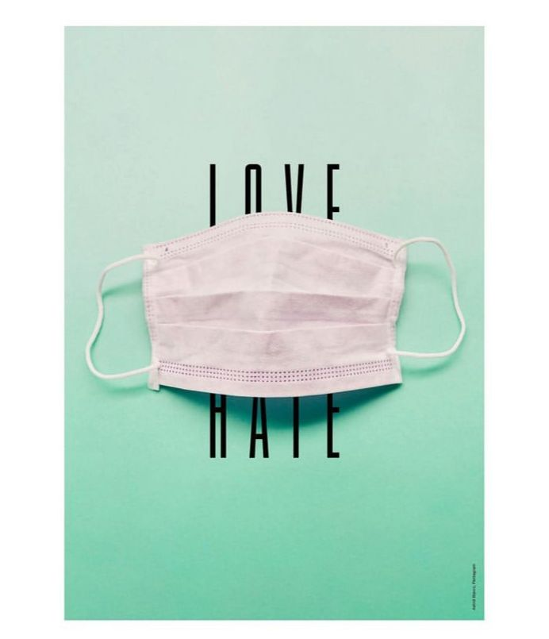
DISEÑO DE CARTELES
Poster para Desingindaba
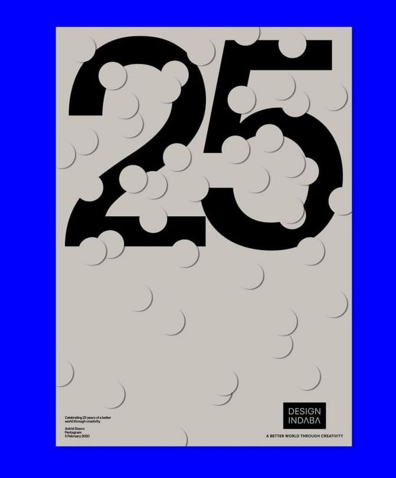
DISEÑO DE CARTELES
Campaña coronavirus
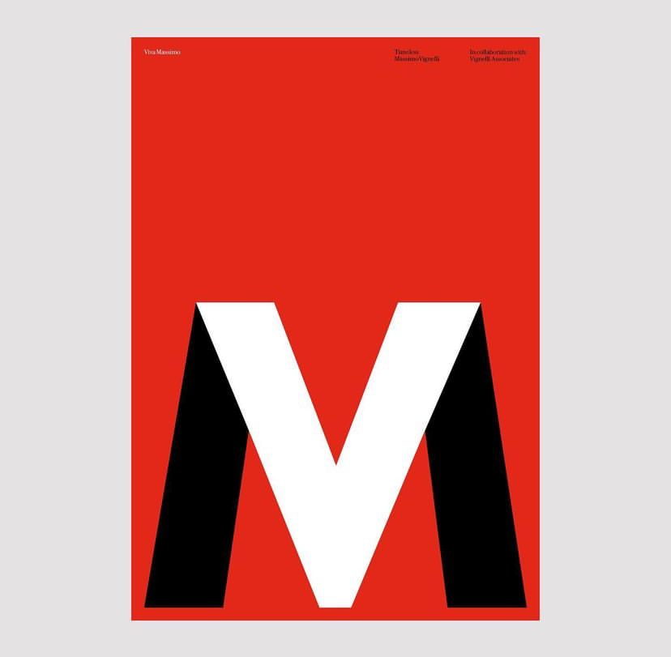
CARTEL TIPOGRÁFICO
Poster para la exhibición
¨Timeless, Massimo Vigneli¨
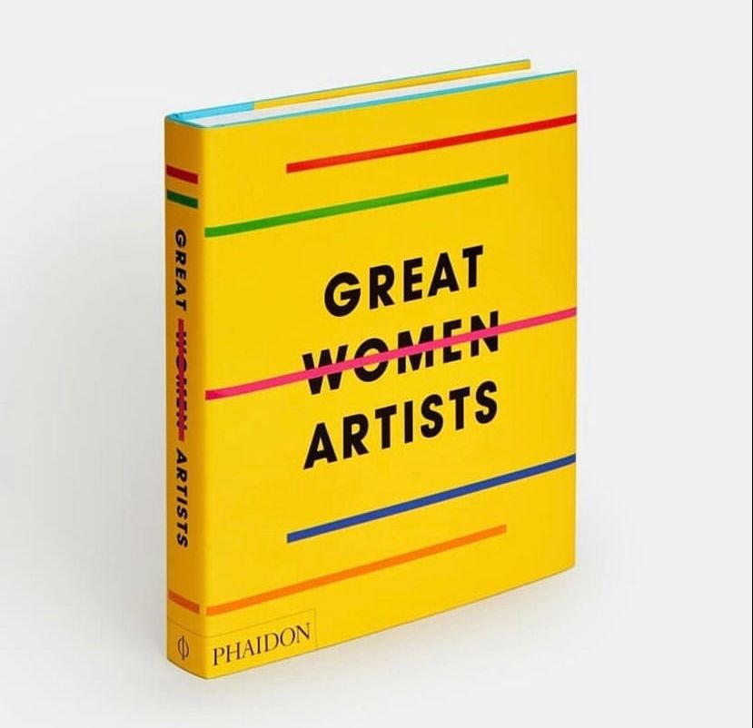
PORTADA LIBRO
Libro Great Women Artists
PREMIOS
Año
Premio
Detalles
2021
D&AD
Wood Pencil, 413 Magazine
2009
ISTD
2 Premier Awards
2009
European Design Awards
Silver - Syzygy
2009
Laus Awards
Gold + 14 Silver
2009
D&AD
In-Book The Death of Innocence (by Mercè Rodoreda)
2009
The Annual, Creative Review
2009
Visual
Gold
2008
Laus Awards
3 Gold
2007
Graphis, NY
Platinum and Gold Art of the Grid
2008
Design Week Awards
Gold
2007
Art Directors Club, NY
Distinctive Merit
2007
I.D. Annual Design, NY
Honorary mention
2006
Art Directors Club of Europe
Gold
2006
Laus Awards
Gold
2006
The Annual, Creative Review
2006
D&AD
In-Book
INFLUENCIAS
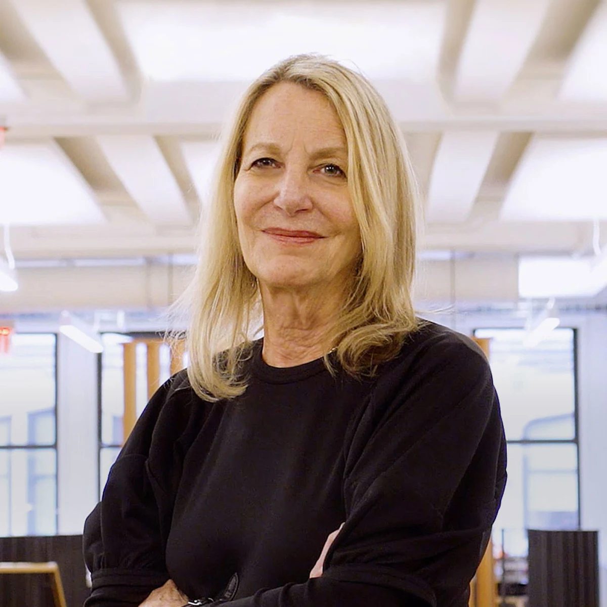
Paula Scher
Paula Scher es una diseñadora gráfica y artista estadounidense. Fue la primera directora de la
agencia de diseño Pentagram
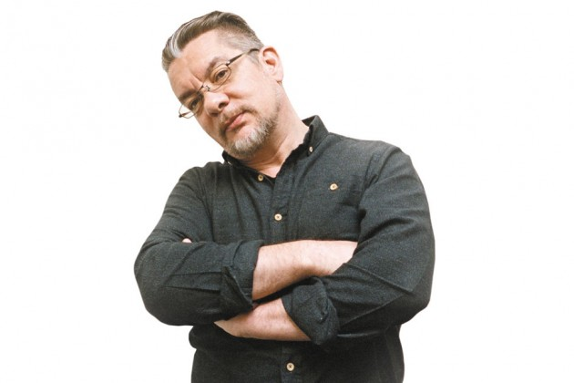
Neville Brody
Fue la mente tras el diseño de revistas rompedoras como 'The Face' o 'Arena'. Modernizó la Times
New Roman para el periódico 'The Times'
ENTREVISTA
Muchos de sus trabajos son diseños de libros. ¿Se venden por su cara?
Un libro tiene que llamar la atención, chillar, seducirte. Diseñar es eso, un juego de
seducción en
el
que damos pistas sin ser evidentes. El caso de la portada de Lolita es ejemplar en ese
sentido:
Nabokov
no podía más con esas portadas de su novela en las que se elegían niñas con poses más o
menos
evidentes.
¿Por qué del vasto campo del diseño acabó eligiendo el mundo de la tipografía?
Estudié también Literatura. Es mi segunda gran pasión. Me gusta leer y escribir. Nací con la
pluma en
una
mano y un biberón en la otra. Mi sueño sería retirarme a una casa de pescadores y escribir.
Cuando
redacto artículos de diseño me ayuda a ser más analítica y abrir un canal de comunicación
que no
hay en
nuestro mundo, muy endogámico, por cierto.
¿Malos tiempos para la letra impresa?
Yo no soporto leer en pantalla más allá de artículos de prensa. El libro no
solo no va
a desaparecer sino
que pienso que es un buen momento para el libro: va a haber menos pero van a estar mejor
hechos. Creo
que se va a vivir un renacimiento del libro. Eso sí, y es un tema que me preocupa mucho,
deberían ser
sostenibles, usar papel ecológico siempre que se pueda.
Está hablando de responsabilidad. En un momento en que se pone en cuestión el modelo
consumista,
como
diseñadora ¿no se siente un eslabón más en la cadena del consumo?
Creo que son más los publicistas pero claro que el diseño forma parte
de la cadena pero
no vendemos la
moto. He pensado mucho en estos temas y creo que, quizá también por eso, he elegido
hacer libros porque
tiene más poesía, me reivindica más. Desde luego no puedo negar que también trabajo con
identidades,
marcas, pero no busco seducir sino comunicar mejor. Mi opinión es que el buen diseño
genera un buen
negocio, y nuestra tarea es que funcione.
Desde que comenzó en la profesión hasta ese momento ¿cómo ve la evolución del diseño
gráfico?
En esencia la profesión no ha cambiado, el proceso de diseño es el mismo.
La diferencia es que ahora disponemos de mejores herramientas y de una tecnología que nos
permiten plantear y visualizar soluciones más complejas con más rapidez.
¿Se puede transmitir cultura a través del diseño?
El diseño forma parte de la cultura, y por tanto siempre transmite cultura. Pero si hay un sector que siempre ha comprendido que para hacer difusión era imprescindible el diseño es el del mundo de la cultura.